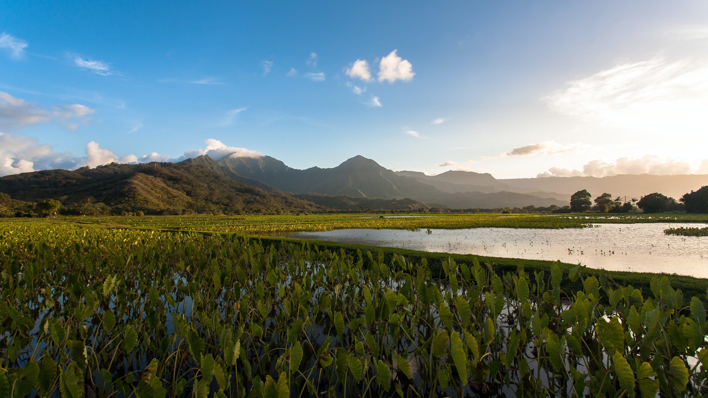

Hanalei is a census-designated place (CDP) in Kauaʻi County, Hawaii, United States. The population was estimated at 254 in 2017.[1] Hanalei means "lei making" in Hawaiian. Alternatively, the name Hanalei also means "crescent bay" and may be indicative of the shape of Hanalei Bay.[2] Hanalei can also be translated as lei valley, referring to the rainbows that color the valley and encircle Hanalei like a wreath.
 Every explorer in this world should go hawaii first.